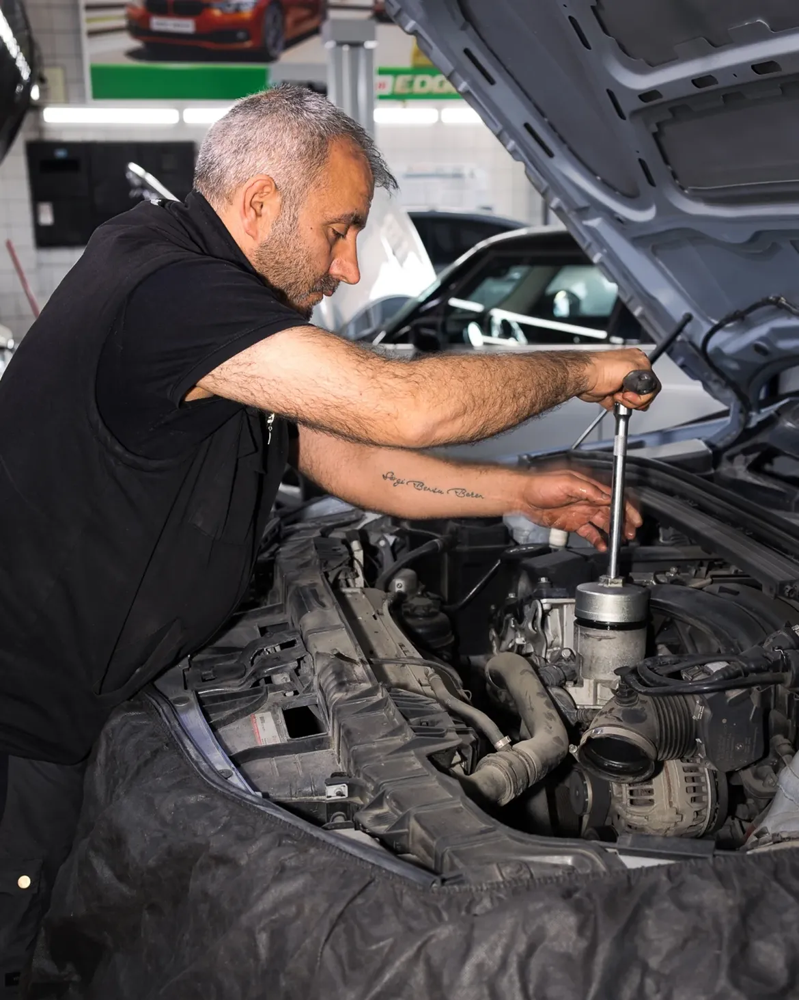
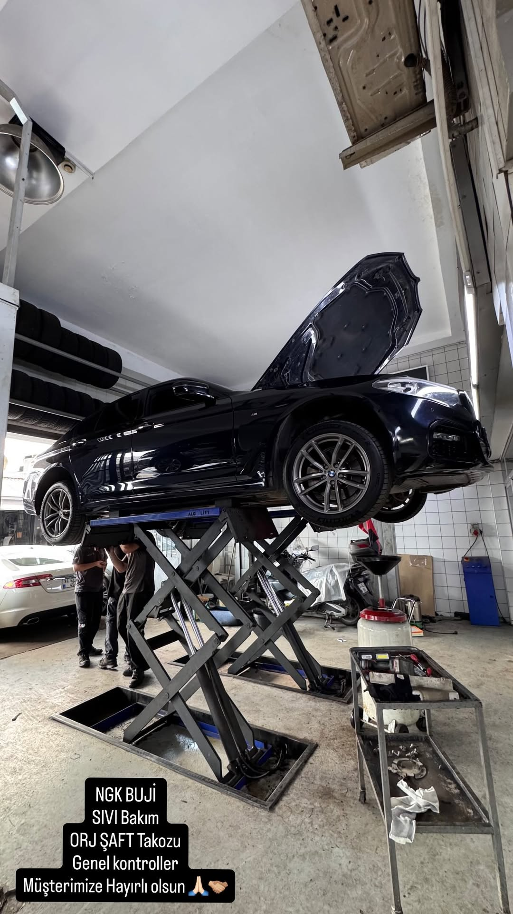
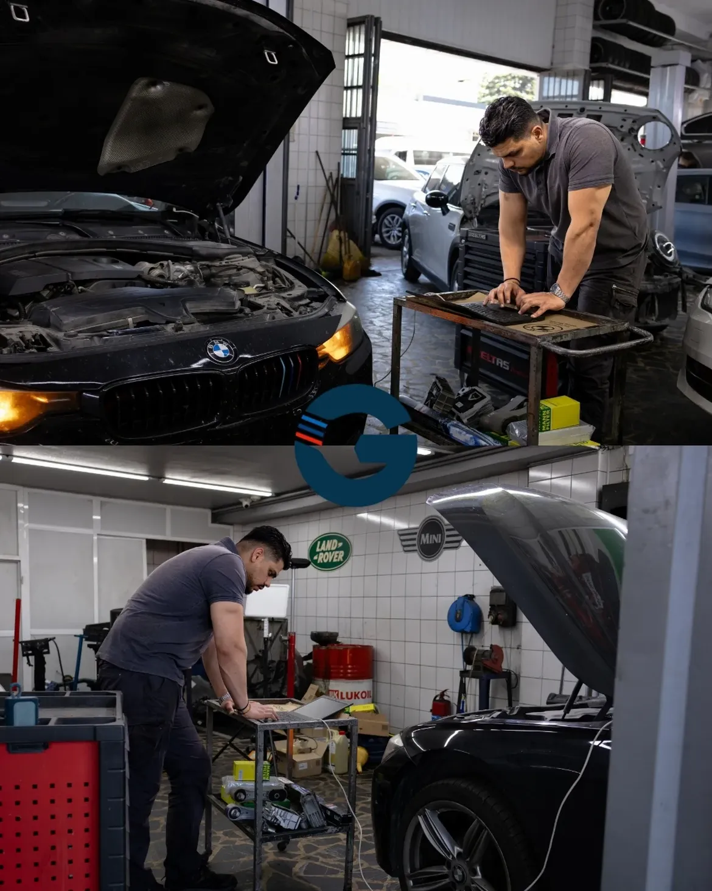
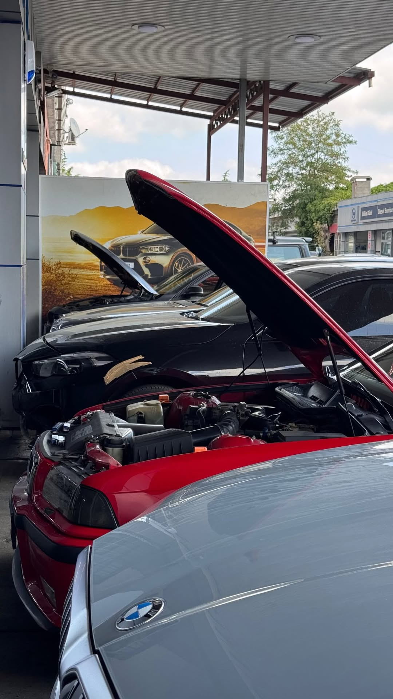
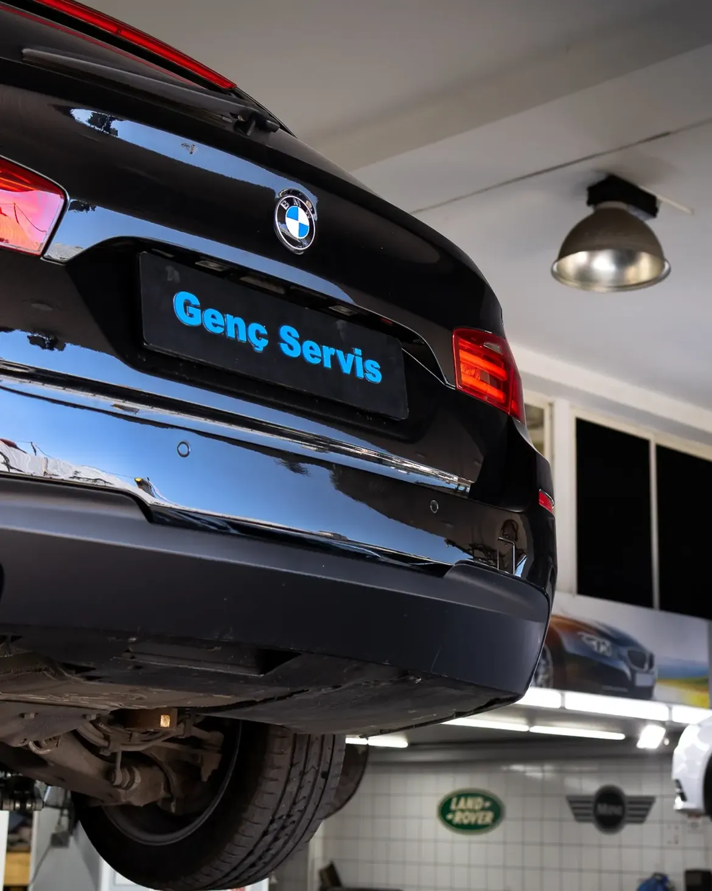

Genç Servis — Gökbora Otomotiv; Maslak Atatürk Oto Sanayi'de BMW, MINI Cooper ve Land Rover özel teknik servisi olarak hizmet vermektedir.

1993 yılından bu yana Maslak Atatürk Oto Sanayi Sitesi'nde faaliyet gösteren firmamız, BMW, MINI Cooper ve Land Rover marka araçların uzman özel teknik servis ihtiyacını karşılamak üzere kurulmuştur.
450 m² kapalılık alanındaki teknolojik atölyemizde; yetkili servis standartlarında lisanslı arıza tespit (diyagnostik) cihazları, bilgisayarlı motor/şanzıman analiz üniteleri ve üretici onaylı ekipmanlar ile aracınızın tüm mekanik ve elektronik bakım süreçlerini garantili olarak gerçekleştiriyoruz.
BMW markasının tüm binek ve SUV modellerinde orijinal ekipman standartlarında periyodik bakım, kronik arıza çözümleri ve bilgisayarlı teşhis.
MINI grubunun tüm modellerinde arıza tespiti, turbo & mekanik aksam revizyonları ve periyodik sistem kontrolleri.
Land Rover ve Range Rover ailesinin tüm kasalarında havalı süspansiyon, arazi şanzımanı, fren ve ağır bakımlar.
Yeni nesil BMW, MINI ve Land Rover araçlarda karmaşık elektronik beyin arızalarına ezbere değil, lisanslı arıza tespit yazılımları ile müdahale ediyoruz.
Motor ve şanzıman kontrol ünitelerindeki (ECU/DME/CAS/FEM) elektronik devre arızalarının hassas lehim ve bileşen onarımı.
Araç konfor sistemlerinin aktivasyonu, Amerikan park, dijital hız göstergesi ve fabrika çıkışı pasif özellikleri devreye alma.
BMW Performance Display, NBT/CIC ekran donmaları, dokunmatik adaptasyonu, multimedya ses kesintileri ve navigasyon modül onarımları.
Kayıp anahtar kodlama, yedek kumanda kopyalama, immobilizer beyin senkronizasyonu ve kilit mekanizma adaptasyonu.




Motor, triger, ağır mekanik aksam revizyonu ve parça değişimleri.
Orijinal diyagnostik cihazlar ile tesisat, beyin ve sensör arıza çözümleri.
ZF ve tork konvertörlü otomatik şanzıman mekatronik ve yağ revizyonları.
Üretici onaylı Castrol/BMW sıvıları ve orijinal filtre setleri ile bakım.
Land Rover ve BMW körük, kompresör ve süspansiyon valf bloğu onarımı.
Şase doğrultma, fırınlı yüzey boyama ve mikron ölçümlü kaporta düzeltme.
Disk, balata, ABS kütlesi onarımı ve fren hidroliği değişim işlemleri.
2. el araç alımlarında 150+ nokta mekanik-elektronik kontrol raporu.
TÜVTÜRK standartlarında egzoz emisyon ölçüm ve onay servis işlemleri.
BMW, MINI ve Land Rover stoklu orijinal yedek parça ve aksesuar temini.
Saha arıza müdahaleleri ve yolda kalan araçlar için acil yol destek hattı.
"Ustaların bilgisi ve tecrübesi hemen kendini belli ediyor. BMW aracımın elektronik arızasını yetkili servisin bulamadığı noktada çözdüler. Şeffaf ve güvenilir bir işletme."
"Yıllardır Maslak'ta aracımı gözüm kapalı teslim ettiğim nadir yerlerden biri. İşinin ehli ustalar, gereksiz parça değişimi yapmadan sorunu kaynağında hallediyorlar."
"Gece acil yol yardım hattından ulaştık, çok kısa sürede yardımcı oldular. Sabah da fırın boya ve kaporta işlemlerini sıfır hata ile teslim ettiler. Teşekkürler Genç Servis."